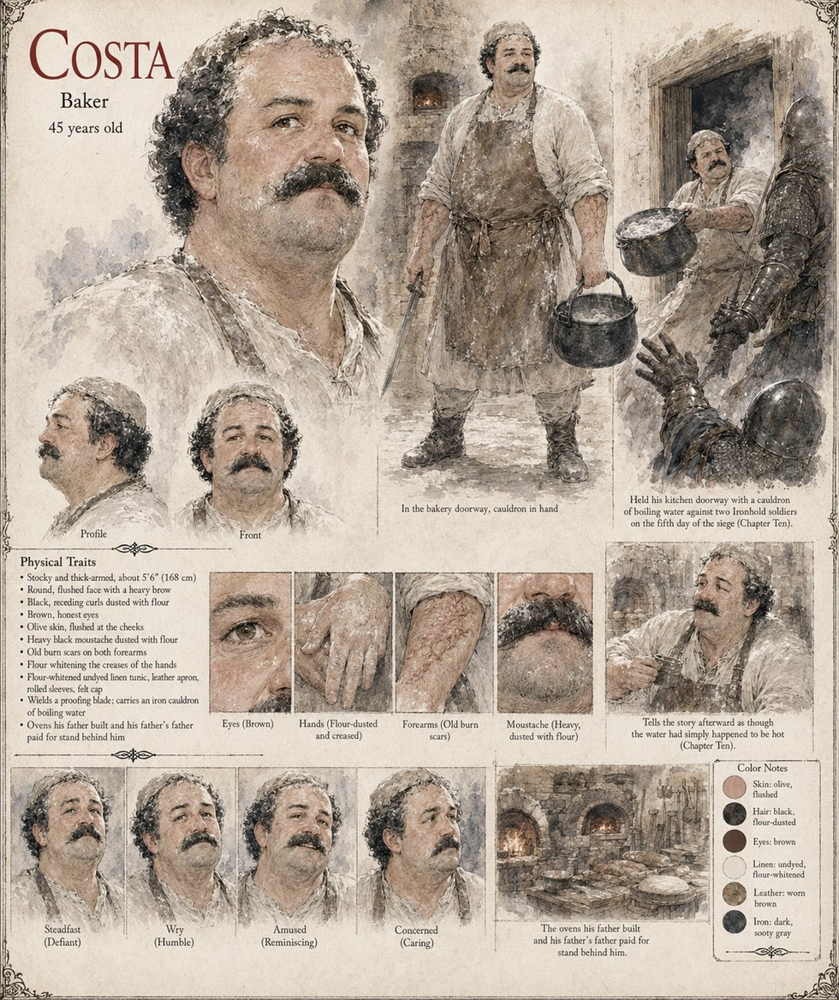

Costa
Baker of Solis · 45 by his sheet
A baker in the besieged city. On the fifth day of the siege two Ironhold soldiers press at his kitchen doorway and he holds it with a cauldron of boiling water (Chapter Ten). The two are Perrin and the Second Scalded Soldier; Perrin dies of the scalding three weeks later. Costa tells the story afterward as though the water had simply happened to be hot. The bible gives him his trade, a proofing blade and the cauldron; the rest of his look is invented.
The sheet makes him forty-five, stocky and thick-armed at about 5'6", with a round, flushed face, a heavy brow and soft jowls, receding black curls and a heavy black moustache dusted with flour, honest brown eyes and olive skin. Old burn scars mark both forearms and flour whitens the creases of his hands. He wears a flour-whitened undyed linen tunic with rolled sleeves, a leather apron and a felt cap, and the ovens his father built, and his father’s father paid for, stand behind him. The panels show him in the doorway with the cauldron, telling the story afterward, and at his ovens. One small flag: the doorway panel draws the two soldiers in dark plate gauntlets and closed helms, where their own sheets dress them in quilted levy jerkins and iron caps.